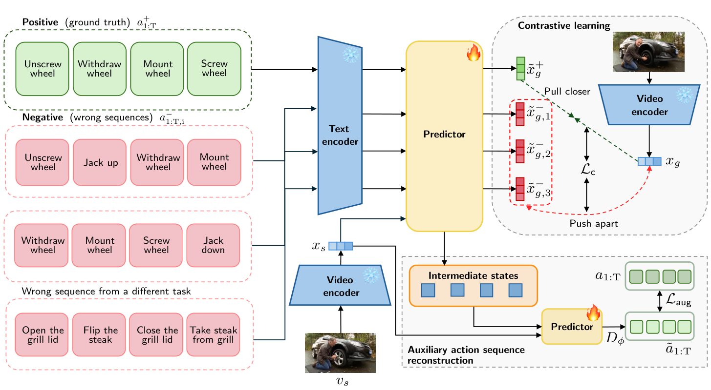
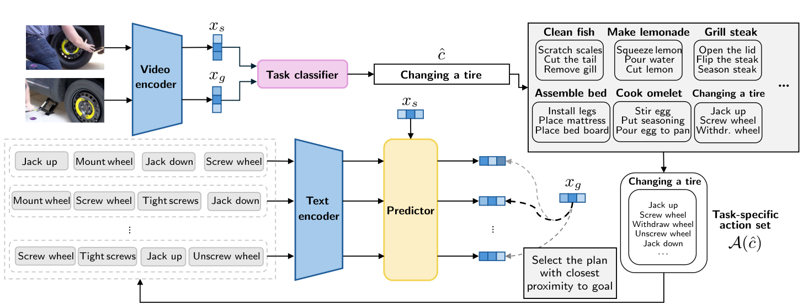
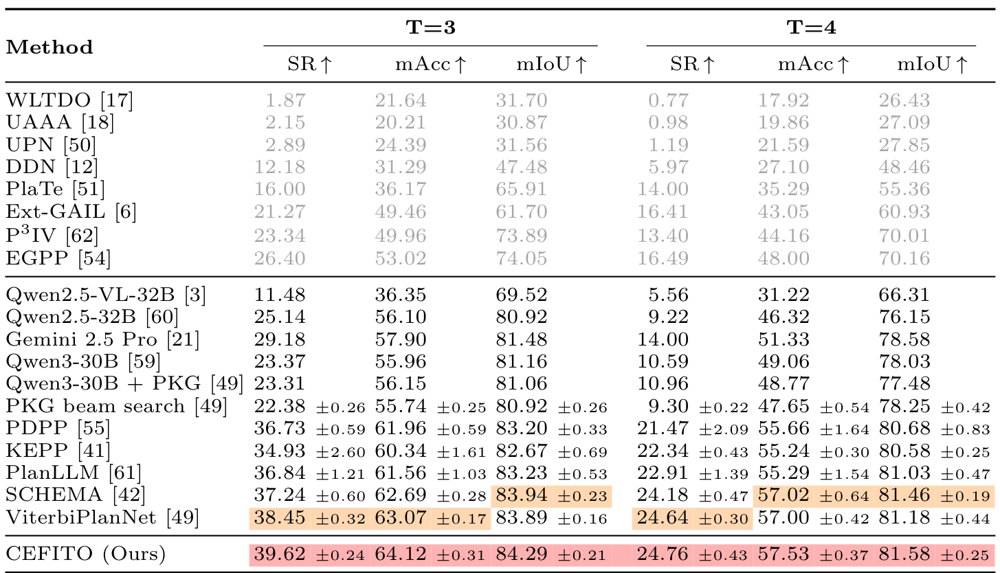
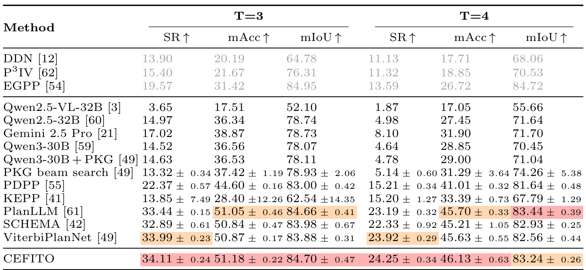

TL;DR: CEFITO recasts procedure planning as energy minimization over an action-conditioned representation learned with a contrastive objective. Instead of predicting an action sequence in a single feed-forward or diffusion pass, we search at inference time over a task-restricted action subset, which lets the model explicitly discard irrelevant actions.
Procedure planning seeks to estimate a sequence of actions to transition from an observed initial state to a given goal state. Current procedure planning approaches directly predict action sequences from latent representations using feed-forward neural networks or diffusion-based inference. These paradigms treat every action as plausible, lacking the ability to enforce task-specific logical constraints that render certain actions irrelevant or not plausible. We propose CEFITO, a procedure planning approach that learns a predictor to express an action-conditioned representation space. Based on this representation space, we formulate procedure planning as a task-constrained optimization problem. Unlike prior methods, CEFITO explicitly reasons over the action space by omitting irrelevant actions during inference-time planning. This reformulation enables effective procedure planning and achieves state-of-the-art accuracy on two established procedure planning benchmarks.
Procedure planning takes a visual initial state \(v_s\) and a visual goal state \(v_g\), encoded into latents \(x_s\) and \(x_g\), and asks for the sequence of actions \(a_{1:T}\) connecting them. CEFITO splits this into two parts: learning an action-conditioned energy field, and searching over it at inference time.

We train a predictor \(P_\theta\) that maps the initial latent \(x_s\) and a candidate action sequence \(a_{1:T}\) (encoded in language form with a frozen CLIP text encoder) to a predicted goal latent \(\tilde{x}_g = P_\theta(x_s, a_{1:T})\). The distance \(d(P_\theta(x_s, a_{1:T}), x_g)\) then acts as an energy: low for correct sequences, high for incorrect ones. Notably, this needs no supervision of intermediate visual states.
Contrastive training. A margin-based triplet loss pulls the prediction for the ground-truth sequence \(a^+_{1:T}\) towards \(x_g\), while pushing predictions for \(N\) wrong sequences \(a^-_{1:T,i}\) away from it.
Mixed-negative sampling. Negatives are drawn as a mixture of hard negatives (same task, wrong ordering or composition) and easy negatives (sequences from a different task), controlled by a ratio \(r\). This imposes both low-level structure (action order) and high-level structure (task separation) on the energy field.
Adaptive margins. A single fixed margin is suboptimal, since negatives differ in how similar they are to the ground truth. We instead set the margin \(\tau_i\) per negative from its action overlap with the positive sequence, so a reordered sequence is separated less aggressively than a sequence of unrelated actions.
Auxiliary action reconstruction. Since intermediate visual states are unavailable, we feed a learnable mask token per action step and reconstruct the action sequence from the resulting intermediate latents through a decoding head \(D_\phi\), which encourages informative intermediate representations.

At inference, planning becomes a discrete search over the action space. Searching the full space is expensive, so a lightweight MLP task classifier first predicts the high-level task \(\hat{c}\) from \((x_s, x_g)\). This restricts the search to the task-specific action subset \(\mathcal{A}(\hat{c})\) derived from the training data, and the plan is the candidate with minimal energy:
\[ \tilde{a}_{1:T} = \arg\min_{\tilde{a}_{1:T} \in \mathcal{A}(\hat{c})} \big\| P_\theta(x_s, \tilde{a}_{1:T}) - x_g \big\|_2 . \]
Unlike feed-forward or diffusion-based planners, this makes the reasoning over the action space explicit: actions irrelevant to the predicted task are never considered.
We evaluate on the CrossTask and COIN procedure planning benchmarks, following the unified protocol of Seminara et al. (five random seeds, mean and 90 % confidence interval), and report success rate (SR), mean accuracy (mAcc), and mean IoU (mIoU).

CEFITO sets a new state of the art across all metrics and both planning horizons on CrossTask. It does so without relying on large language models, outperforming the LLM-based SCHEMA by 2.38 % SR at \(T=3\), and improving over ViterbiPlanNet by 1.17 % and 0.12 % SR at \(T=3\) and \(T=4\).

On COIN, CEFITO achieves the best SR, mAcc, and mIoU at \(T=3\), and the best SR and mAcc at \(T=4\). The margins are smaller than on CrossTask, which we attribute to COIN's much wider task distribution (180 tasks vs. 18), leaving fewer training videos per task and thereby weakening the intra-task hard-negative signal that drives our contrastive training.
@inproceedings{afham2026cefito,
title = {Contrastive Energy Fields for Inference-Time Procedure Planning in Instructional Videos},
author = {Mohamed Afham and Christoph Reich and Oliver Hahn and Daniel Cremers and Stefan Roth},
booktitle = {Proceedings of the 48th German Conference on Pattern Recognition},
year = {2026},
}
This project has received funding from the European Research Council (ERC) under the European Union's Horizon 2020 research and innovation programme (grant agreement No. 866008). Additionally, this project is also funded by the Deutsche Forschungsgemeinschaft (DFG, German Research Foundation) under Germany's Excellence Strategy (EXC-3066/1 “The Adaptive Mind”, Project No. 533717223, EXC-3057/1 “Reasonable Artificial Intelligence”, Project No. 533677015). Mohamed Afham & Christoph Reich are supported by the Konrad Zuse School of Excellence in Learning and Intelligent Systems (ELIZA) through the DAAD programme Konrad Zuse Schools of Excellence in Artificial Intelligence, sponsored by the Federal Ministry of Education and Research. This work was also supported by the ERC Advanced Grant SIMULACRON, the Georg Nemetschek Institute project AI4TWINNING, and the DFG project 4D-YouTube CR 250/26-1.